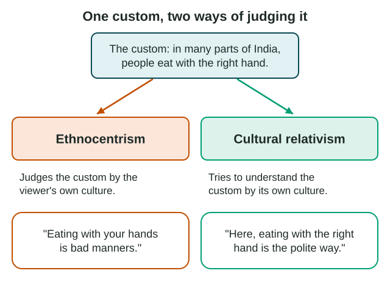

Introduction to Culture
Culture is what a group learns and shares: practices, beliefs, objects and behaviors passed from one generation to the next.
Part 1 · Hook
Why this matters
Part 2 · Prerequisite check
Quick check before you start
1. People on a dry plain build houses from local earth because wood is scarce, even though they could import wood. Which idea from Unit 1 fits this choice best?
- Possibilism
- Environmental determinism
- Distance decay
- Time-space compression
Show the answer
The environment offers options and people choose among them: that is possibilism. Determinism would say the environment decides for them.
- Correct: Possibilism:
- Environmental determinism:
- Distance decay:
- Time-space compression:
2. A map shows each province of one country. What is the scale of analysis of its data?
- Local (subnational)
- Global
- National
- A large map scale
Show the answer
The data are for parts of one country, so the scale of analysis is local (subnational), whatever the size of the map.
- Correct: Local (subnational):
- Global:
- National:
- A large map scale:
Part 3 · See it
See it first

Part 4 · Step by step
How it works, step by step
- A group shares ways of living: food, language, beliefs, buildingsthose shared ways are its culture, made of many culture traits
- Children learn their group's ways from family, school and neighborsculture is passed on by teaching, not inherited at birth
- People meet a culture that differs from their ownthey may judge it by their own standards (ethnocentrism) or try to understand it on its own terms (cultural relativism)
- Geographers practice cultural relativismthey can explain why a trait makes sense in its place instead of ranking cultures
Part 5 · Key ideas
Key ideas
- Culture is the shared practices, beliefs, objects and behaviors that a group learns and passes on. Each separate part, such as a food, a greeting or a house style, is a culture trait.
- Folk culture belongs to a small, close group, is taught by family and community, and changes slowly. Popular culture is shared by large, mixed groups through media and business, and changes quickly.
- Ethnocentrism judges another culture by the standards of your own. Cultural relativism tries to understand a practice by the standards of the culture it belongs to.
- Culture traits show up on the land: in food, in buildings such as the adobe homes of Taos Pueblo, and in land use, such as where pigs are raised in Indonesia.
Part 6 · Misconception
A common mistake
The wrong idea: Cultural relativism means you must agree with, or adopt, every custom you study.
What actually happens: Cultural relativism means understanding a custom by its own culture's standards before judging it. You can explain why Seoul families wait for an elder to eat without adopting the custom yourself.
Part 7 · Check yourself
Check yourself
Exam-style questions. Anything you miss goes into your review queue.
Text
Two visitors at a family dinner in Seoul
Two visitors at one dinner in Seoul, South Korea (invented notes, written by LevlPrep for practice, 2026)
Visitor 1: "Small side dishes sat in the middle of the table, and everyone shared them. No one ate until the grandmother picked up her spoon. I asked my host why, and she said it shows respect for older people. By the second night, I waited too."
Visitor 2: "No one had their own plate, which seemed strange and messy to me. Back home we each get our own plate, and that is simply the correct way to eat. They should learn to do it properly."
1. Which visitor's notes show ethnocentrism?
- Visitor 2, who calls the home way of eating "the correct way"
- Visitor 1, who changed a habit so as to wait for the grandmother to eat
- Both visitors, because both describe a custom new to them
- Neither visitor, because neither one lives in Seoul
Show the answer
Visitor 2 judges the Korean meal by the standards of the visitor's own culture and calls the home custom the correct one. That is ethnocentrism.
- Correct: Visitor 2, who calls the home way of eating "the correct way": Right: Visitor 2 judges the Korean meal by the standards of the visitor's own culture and calls the home custom the correct one. That is ethnocentrism.
- Visitor 1, who changed a habit so as to wait for the grandmother to eat: Visitor 1 asked why and adjusted. Trying to understand a custom on its own terms is cultural relativism, the opposite of ethnocentrism.
- Both visitors, because both describe a custom new to them: Describing a custom is not judging it. Only Visitor 2 ranks the home custom above the Korean one.
- Neither visitor, because neither one lives in Seoul: Where you live does not decide it. Ethnocentrism is judging another culture by your own culture's standards, which Visitor 2 does.
2. Which detail in Visitor 1's notes best shows cultural relativism?
- Noticing that the side dishes sat in the middle
- Asking the host why everyone waits
- Staying in Seoul for more than one night
- Writing the notes down for other people
Show the answer
asking what a custom means inside its own culture, before judging it, is the heart of cultural relativism.
- Noticing that the side dishes sat in the middle: Noticing a custom only describes it. Relativism is about how you judge it: by its own culture's standards.
- Correct: Asking the host why everyone waits: Right: asking what a custom means inside its own culture, before judging it, is the heart of cultural relativism.
- Staying in Seoul for more than one night: Time in a place does not show an attitude. The question asks what shows understanding a custom by its own standards.
- Writing the notes down for other people: Keeping notes is not an attitude toward the culture. Asking why, and then respecting the answer, is.
3. In the notes, waiting for the oldest person to start eating is best described as which of these?
- A physical feature of Seoul's landscape
- An example of ethnocentrism by the family
- A culture trait the family has learned
- A popular culture trend that changes each year
Show the answer
a culture trait is one learned part of a culture, such as a food, a custom or a building style. Waiting for an elder is a shared, learned custom.
- A physical feature of Seoul's landscape: A physical feature is part of nature, such as a river or a hill. A table custom is learned behavior, so it is part of culture.
- An example of ethnocentrism by the family: The family is following its own custom, not judging another culture. Ethnocentrism needs a judgment of someone else's culture.
- Correct: A culture trait the family has learned: Right: a culture trait is one learned part of a culture, such as a food, a custom or a building style. Waiting for an elder is a shared, learned custom.
- A popular culture trend that changes each year: Respect shown to elders at meals is passed down through generations and changes slowly, so it is not a fast-changing trend.
4. A student in Ohio sees a video of a market in Bangkok, Thailand, where fried crickets are sold as a snack. The student says, "Eating bugs is gross. People there should eat normal food." What does the student show?
- Ethnocentrism: judging Thai food by the student's own culture
- Cultural relativism: understanding Thai food on its own terms
- Folk culture: a custom passed down in Ohio families
- Possibilism: the environment sets limits on what people eat
Show the answer
calling Ohio food "normal" and Thai food "gross" judges another culture by the standards of your own. That is ethnocentrism.
- Correct: Ethnocentrism: judging Thai food by the student's own culture: Right: calling Ohio food "normal" and Thai food "gross" judges another culture by the standards of your own. That is ethnocentrism.
- Cultural relativism: understanding Thai food on its own terms: Relativism would ask why crickets are a snack in Thailand, not call them gross.
- Folk culture: a custom passed down in Ohio families: The student is making a judgment, not practicing a custom. The question is about the attitude shown.
- Possibilism: the environment sets limits on what people eat: Possibilism is about people choosing among options the environment allows, not about judging another culture.
5. Which trait is more typical of popular culture than of folk culture?
- It is taught by elders and stays the same for generations
- It reaches millions of people through media and changes quickly
- It belongs to a small group living in one rural area
- It is closely tied to the local climate and the building materials at hand
Show the answer
popular culture spreads to large, mixed groups through media and business, and its styles change fast.
- It is taught by elders and stays the same for generations: Slow change and teaching by elders describe folk culture.
- Correct: It reaches millions of people through media and changes quickly: Right: popular culture spreads to large, mixed groups through media and business, and its styles change fast.
- It belongs to a small group living in one rural area: A small, close, often rural group is typical of folk culture.
- It is closely tied to the local climate and the building materials at hand: Folk traits, such as house styles, are often tied to local materials. Popular culture looks much the same in many places.
6. In Indonesia, many pig farms are found on the island of Bali, where most people are Hindu, but few are found on nearby Java, where most people are Muslim and follow food rules that forbid pork. What does this island-by-island pattern show?
- Java's climate is too wet for raising any animals
- Pig farming depends mainly on the number of people living on each island
- Farmers on Bali are ethnocentric toward farmers on Java
- Religion, a culture trait, shapes food and land use in each place
Show the answer
food rules are part of religious culture. They change what farmers raise, so land use differs between islands with different main religions.
- Java's climate is too wet for raising any animals: Java raises many other animals, such as chickens and goats. The difference in pigs follows religion, not climate.
- Pig farming depends mainly on the number of people living on each island: Java has far more people than Bali, yet fewer pig farms. Population size does not explain the pattern.
- Farmers on Bali are ethnocentric toward farmers on Java: The pattern comes from each group following its own food customs, not from judging the other group.
- Correct: Religion, a culture trait, shapes food and land use in each place: Right: food rules are part of religious culture. They change what farmers raise, so land use differs between islands with different main religions.
Part 8 · Summary
Summary
Part 9 · Up next
What comes next
Part 10 · Connections